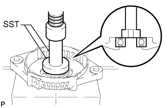
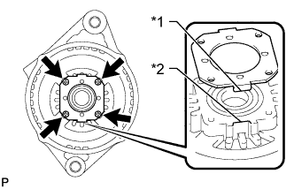
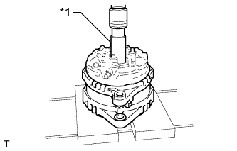
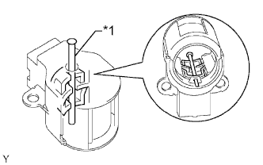
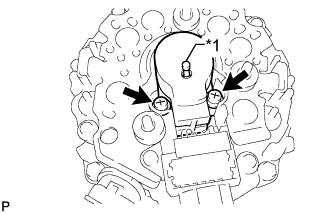
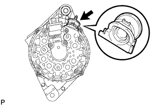
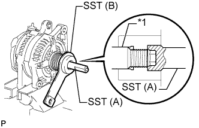
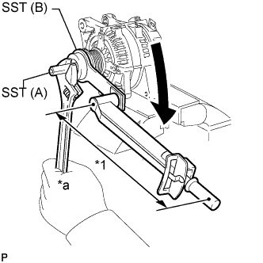

ГЕНЕРАТОР > ПОВТОРНАЯ СБОРКА |
| 1. УСТАНОВИТЕ ПОДШИПНИК РАМЫ ГЕНЕРАТОРА СО СТОРОНЫ ПРИВОДА |
|  |
С помощью SST и пресса запрессуйте новый подшипник рамы генератора со стороны привода.
|  |
Вставьте выступы прижимной пластины в вырезы рамы со стороны привода и установите прижимную пластину.
| *1 | Выступ |
| *2 | Вырез |
Вверните 4 винта.
| 2. УСТАНОВИТЕ РОТОР ГЕНЕРАТОРА В СБОРЕ |
Установите ротор генератора на раму со стороны привода.
Установите шайбу генератора на ротор генератора.
| 3. УСТАНОВИТЕ КАТУШКУ ГЕНЕРАТОРА В СБОРЕ |
|  |
С помощью удлиненной торцевой головки (21 мм) и пресса медленно запрессуйте катушку генератора.
| *1 | Удлиненная торцевая головка (21 мм) |
Вверните 4 болта.
| 4. УСТАНОВИТЕ ЩЕТКОДЕРЖАТЕЛЬ ГЕНЕРАТОРА В СБОРЕ |
|  |
При установке 2 щеток в щеткодержатель генератора вставьте в отверстие щеткодержателя штырь диаметром 1,0 мм (0,0394 дюйма).
| *1 | Штифт |
|  |
Установите щеткодержатель генератора в катушку генератора и закрепите его 2 винтами.
| *1 | Штифт |
Извлеките штырь из щеткодержателя генератора.
| 5. УСТАНОВИТЕ ИЗОЛЯТОР КОНТАКТА ГЕНЕРАТОРА |
|  |
Установите изолятор контакта на катушку генератора.
| 6. УСТАНОВИТЕ ЗАДНЮЮ ТОРЦЕВУЮ КРЫШКУ ГЕНЕРАТОРА |
Установите заднюю торцевую крышку генератора на генератор и закрепите ее 3 гайками.
Установите фиксатор шнура и закрепите его гайкой.
| 7. УСТАНОВИТЕ ШКИВ ГЕНЕРАТОРА С МУФТОЙ |
Предварительно установите шкив генератора с муфтой вручную.
Закрепите генератор в тисках между алюминиевыми пластинами.
|  |
Установите на шкив генератора с муфтой SST (A) и SST (B), как показано на рисунке.
| *1 | Вал ротора |
|  |
Удерживая SST (A) гаечным ключом, поверните SST (B) по часовой стрелке, чтобы закрепить шкив генератора с муфтой.
| *1 | Длина рычага |
| *a | Удерживайте |
 | Поверните |
Снимите SST с генератора.
Убедитесь, что шкив генератора с муфтой вращается плавно.
| 8. УСТАНОВИТЕ КРЫШКУ ШКИВА ГЕНЕРАТОРА |
Установите новую крышку шкива генератора на шкив муфты.